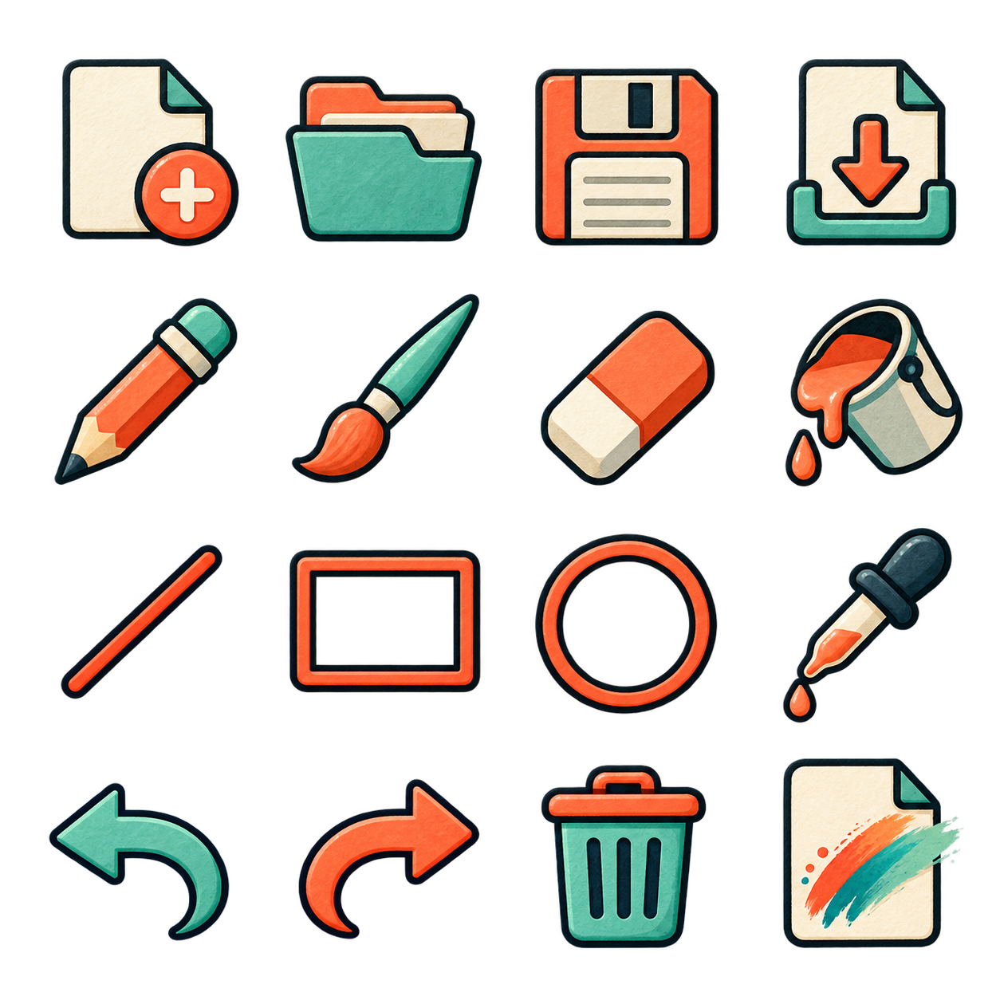

T19 Build notepaint, from a blank folder
Result: a working notepad and paint app in one window. Each document keeps its words and picture together. You can create, search, rename, duplicate, delete, import and export documents. Drawing includes eight tools and undo/redo.
Already-built example: examples/notepaint/. The editable engine source is tools/examples/notepaint/; the example folder is generated from it. For this lesson, make your own folder so you can edit freely. You need the nord CLI and a current engine checkout for the reusable artwork.
1. Decide what a finished app means#
Write a short plan before coding:
A document has a title, plain text and one picture. The app must keep them together, save locally, and let the user take a portable copy away. A person should be able to understand the screen without reading source code.
That gives you three small pieces: storage, drawing and the interface. Keep them separate because they change for different reasons. Do not add accounts, networking, rich text or layers to this first version.
2. Make the project folder#
Create a folder called my-notepaint. Inside it make this structure:
my-notepaint/
nord.project.json
index.html
app.js
store.js
drawing.js
style.css
_kit.js
assets/
ui/tools.png
ui/tools.png.meta.json
fonts/inter.woff2
fonts/LICENSEThe four JavaScript files are code. The CSS file is appearance. The assets folder holds files that can be reused or replaced. Keep filenames and capitals exactly the same as the imports below.
For a larger app, see Plan a larger Nord project. This small app deliberately keeps its files close together.
3. Add the Nord project settings#
Create nord.project.json. Copy this complete file. type: "html" selects plain HTML; the empty startScene is intentional because the app has no game scene.
{
"format": 1,
"name": "notepaint",
"id": "com.crowelian.notepaint",
"type": "html",
"engineVersion": "0.1.0",
"startScene": "",
"display": {
"width": 1280,
"height": 800,
"scale": "fit",
"pixelArt": false,
"background": "#2e3440"
},
"physics": {
"engine": "none",
"gravity": [
0,
0,
0
]
},
"input": {
"actions": {
"left": [
"KeyA",
"ArrowLeft"
],
"right": [
"KeyD",
"ArrowRight"
],
"up": [
"KeyW",
"ArrowUp"
],
"down": [
"KeyS",
"ArrowDown"
],
"jump": [
"Space",
"KeyW",
"ArrowUp"
],
"fire": [
"Space",
"Mouse0"
],
"interact": [
"KeyE",
"Enter"
]
}
},
"plugins": [
"ui",
"audio"
],
"ui": {
"skin": "cyber",
"theme": "nord"
}
}
4. Add the page that starts the app#
Create index.html. This page gives the app a root element, imports mount() from app.js, and calls it. mount means “put this application inside that element.”
<!doctype html>
<html lang="en"><head><meta charset="utf-8"><meta name="nord-app-id" content="com.crowelian.notepaint"><meta name="viewport" content="width=device-width,initial-scale=1"><title>notepaint</title>
<style>html,body{margin:0;height:100%;background:#2e3440}#app{height:100vh}</style></head>
<body><div id="app"></div>
<script type="module">
import { mount } from './app.js';
try { await mount(document.getElementById('app')); window.__nord_ready = true; } catch (e) { console.error(e); window.__nord_error = String(e); }
</script></body></html>
Do not add CDN scripts. Everything this application needs stays in its own folder.
5. Copy the reusable artwork and font#
From the engine checkout, copy these files into your own folder:
| Copy from | Paste to |
|---|---|
examples/notepaint/assets/ui/tools.png |
my-notepaint/assets/ui/tools.png |
examples/notepaint/assets/ui/tools.png.meta.json |
Same name inside your UI folder |
examples/notepaint/assets/fonts/inter.woff2 |
Your fonts folder |
examples/notepaint/assets/fonts/LICENSE |
Your fonts folder; keep the licence |
You can use a file manager; no image editor is required. The picture contains sixteen separate UI symbols. The app selects a symbol by its row and column, rather than downloading sixteen files.

Read examples/notepaint/assets.md for the numbered inventory; ART_DIRECTION.md records the exact built-in ImageGen prompt. The original art is MIT; Inter is OFL-1.1.
6. Add the small DOM helper#
Create _kit.js using the code below, or copy examples/notepaint/_kit.js. This reuses Nord's existing app helper. The function h(tag, properties, children...) creates elements. Text children become text, so document titles and notes are not treated as HTML.
Only h is imported by this app. The other functions belong to the shared engine kit and do not change this app's layout.
// Shared helpers for the app kits (not a library item). Tiny DOM builder + themed base CSS using the Nord UI variables.
export const css = `.nk{font:15px/1.4 var(--nord-font-ui,Inter,system-ui,sans-serif);color:var(--nord-fg,#eceff4);background:var(--nord-bg,#2e3440);padding:16px;box-sizing:border-box;height:100%;overflow:auto}
.nk *{box-sizing:border-box}.nk h2{margin:0 0 12px;font-size:20px}.nk button,.nk input,.nk select,.nk textarea{font:inherit;color:inherit;background:var(--nord-panel,#3b4252);border:1px solid var(--nord-border,#4c566a);border-radius:6px;padding:6px 10px}
.nk button{cursor:pointer;background:var(--nord-accent,#88c0d0);color:var(--nord-bg,#2e3440);border:0;font-weight:600}.nk button.ghost{background:transparent;color:inherit;border:1px solid var(--nord-border,#4c566a)}
.nk .row{display:flex;gap:8px;align-items:center;margin-bottom:8px}.nk .card{background:var(--nord-panel,#3b4252);border:1px solid var(--nord-border,#4c566a);border-radius:8px;padding:10px;margin-bottom:8px}
.nk .grow{flex:1}.nk .muted{opacity:.6}`;
let injected = false;
export function h(tag, props = {}, ...kids) {
const el = document.createElement(tag);
for (const [k, v] of Object.entries(props ?? {})) { if (k.startsWith('on')) el.addEventListener(k.slice(2), v); else if (k === 'class') el.className = v; else if (k === 'style' && typeof v === 'object') Object.assign(el.style, v); else if (v !== false && v != null) el.setAttribute(k, v === true ? '' : v); }
el.append(...kids.flat().filter((x) => x != null && x !== false));
return el;
}
export function shell(root, title) {
if (!injected) { document.head.append(h('style', {}, css)); injected = true; }
root.replaceChildren(); const box = h('div', { class: 'nk' }, h('h2', {}, title)); root.append(box); return box;
}
export const store = (key, init) => { let v = init; try { v = JSON.parse(localStorage.getItem(key)) ?? init; } catch {} return { get: () => v, set: (n) => { v = n; try { localStorage.setItem(key, JSON.stringify(v)); } catch {} } }; };
7. Design one document#
Each document has these values:
| Value | Why it exists |
|---|---|
| id | A unique name the database uses internally. Two documents can have the same visible title. |
| title | The visible name on the left and above the editors. |
| text | The plain text from the textarea. |
| image | A PNG stored as a data URL: the picture bytes travel with the document. |
| updatedAt | A timestamp for ordering recently edited documents. |
IndexedDB is a browser database. It can hold larger pictures more comfortably than putting every PNG into a tiny localStorage string. It still belongs to this browser and address, so portable export remains necessary.
8. Create store.js#
Paste the complete file. openNotebook() opens the database, creates a documents store the first time, and gives the app all/put/remove operations.
A transaction is one database operation that either finishes or fails. Saving reports success only after the transaction finishes, not merely after requesting a write. readDocument checks a portable import before accepting it. download creates a local download and releases its temporary URL afterwards.
// IndexedDB keeps text and pictures together without a server or external library.
export async function openNotebook() {
const db = await new Promise((resolve, reject) => {
const request = indexedDB.open('nord.notepaint', 1);
request.onupgradeneeded = () => request.result.createObjectStore('documents', { keyPath: 'id' });
request.onsuccess = () => resolve(request.result);
request.onerror = () => reject(request.error);
});
const transact = (mode, action) => new Promise((resolve, reject) => {
const tx = db.transaction('documents', mode);
const request = action(tx.objectStore('documents'));
tx.oncomplete = () => resolve(request.result);
tx.onerror = () => reject(tx.error);
tx.onabort = () => reject(tx.error ?? new Error('Save cancelled'));
});
return {
all: () => transact('readonly', s => s.getAll()),
put: doc => transact('readwrite', s => s.put(doc)),
remove: id => transact('readwrite', s => s.delete(id)),
close: () => db.close(),
};
}
export const newDocument = (title = 'Untitled') => ({ id: globalThis.crypto?.randomUUID?.() ?? Date.now().toString(36) + '-' + Math.random().toString(36).slice(2), title, text: '', image: '', updatedAt: Date.now() });
export function download(name, content, type) {
const url = URL.createObjectURL(new Blob([content], { type }));
const link = document.createElement('a'); link.href = url; link.download = name; link.click();
setTimeout(() => URL.revokeObjectURL(url), 1000);
}
export function readDocument(value) {
if (value?.format !== 'notepaint' || value.version !== 1 || !value.document || typeof value.document.text !== 'string' || typeof value.document.title !== 'string') throw new Error('Choose a Notepaint .json document.');
const d = value.document;
if (d.image && (typeof d.image !== 'string' || !d.image.startsWith('data:image/png;base64,') || d.image.length > 12000000)) throw new Error('The drawing must be an embedded PNG under 12 MB.');
if (d.text.length > 1000000) throw new Error('The note is too large (maximum 1 million characters).');
return { ...newDocument(d.title.slice(0, 120)), text: d.text, image: d.image || '' };
}
9. Understand the drawing canvas#
The drawing has a fixed 960×640 working area. CSS can display it smaller. Pointer coordinates therefore need converting from screen pixels into canvas pixels:
const x = (event.clientX - rect.left) * canvas.width / rect.width;
const y = (event.clientY - rect.top) * canvas.height / rect.height;Without this conversion, the brush would draw in the wrong place whenever the window shrinks. Pointer events support a mouse, touchscreen and pen with the same handlers.
10. Add drawing.js#
Paste the complete file. Read it in these groups:
- Settings: the chosen tool, ink and brush size.
- Snapshots: undo saves the canvas before a complete action. Redo holds the image that undo replaced. History is capped at twenty pictures.
- Freehand tools: pencil/brush/eraser draw short segments as the pointer moves. Eraser draws white because this app uses an opaque white page.
- Shapes: line/rectangle/ellipse restore the before-picture each move, then draw one fresh preview. This avoids leaving a trail of rectangles.
- Fill: walk connected pixels of exactly the starting colour, changing each once. A typed-array queue avoids recursive calls that could overflow.
- Load: decode a picture, preserve its shape, centre it and fit it within the page. A revision number stops an old image load from replacing a newer document.
- Cleanup: remove pointer listeners when the app closes.
// Extends the engine's library/apps/paint.js pointer-coordinate and snapshot approach.
export function createDrawing(canvas, changed) {
const ctx = canvas.getContext('2d', { willReadFrequently: true });
const undo = [], redo = [];
let tool = 'brush', color = '#253949', size = 7, active = null, revision = 0;
const image = () => ctx.getImageData(0, 0, canvas.width, canvas.height);
const pos = event => {
const r = canvas.getBoundingClientRect();
return { x: Math.max(0, Math.min(canvas.width - 1, (event.clientX - r.left) * canvas.width / r.width)), y: Math.max(0, Math.min(canvas.height - 1, (event.clientY - r.top) * canvas.height / r.height)) };
};
const blank = () => { ctx.fillStyle = '#ffffff'; ctx.fillRect(0, 0, canvas.width, canvas.height); };
const checkpoint = () => { undo.push(image()); if (undo.length > 20) undo.shift(); redo.length = 0; };
const finish = () => { revision++; changed({ undo: undo.length, redo: redo.length }); };
const stroke = (a, b, pressure = 1) => {
ctx.strokeStyle = tool === 'eraser' ? '#ffffff' : color; ctx.fillStyle = ctx.strokeStyle;
ctx.lineWidth = (tool === 'pencil' ? 2 : size) * (pressure || 1); ctx.lineCap = ctx.lineJoin = 'round';
ctx.beginPath(); ctx.moveTo(a.x, a.y); ctx.lineTo(b.x + 0.01, b.y); ctx.stroke();
};
function fill(point) {
const img = image(), pixels = img.data, w = canvas.width, h = canvas.height;
const start = Math.floor(point.y) * w + Math.floor(point.x), at = start * 4;
const target = Array.from(pixels.slice(at, at + 4));
const next = [parseInt(color.slice(1, 3), 16), parseInt(color.slice(3, 5), 16), parseInt(color.slice(5, 7), 16), 255];
if (target.every((v, i) => v === next[i])) return;
const queue = new Uint32Array(w * h), seen = new Uint8Array(w * h); let head = 0, tail = 1;
queue[0] = start; seen[start] = 1;
const push = p => { if (!seen[p]) { seen[p] = 1; queue[tail++] = p; } };
while (head < tail) {
const p = queue[head++], i = p * 4;
if (!target.every((v, k) => pixels[i + k] === v)) continue;
next.forEach((v, k) => { pixels[i + k] = v; });
const x = p % w, y = Math.floor(p / w);
if (x > 0) push(p - 1); if (x < w - 1) push(p + 1); if (y > 0) push(p - w); if (y < h - 1) push(p + w);
}
ctx.putImageData(img, 0, 0);
}
const down = event => {
if (event.button !== 0 || active) return; event.preventDefault(); const p = pos(event);
if (tool === 'picker') { const pixel = ctx.getImageData(Math.floor(p.x), Math.floor(p.y), 1, 1).data; color = '#' + [...pixel.slice(0, 3)].map(n => n.toString(16).padStart(2, '0')).join(''); changed({ color }); return; }
checkpoint();
if (tool === 'fill') { fill(p); finish(); return; }
canvas.setPointerCapture(event.pointerId); active = { id: event.pointerId, start: p, previous: p, before: undo.at(-1) };
if (['brush', 'pencil', 'eraser'].includes(tool)) stroke(p, p, event.pointerType === 'pen' ? event.pressure : 1);
};
const move = event => {
if (!active || event.pointerId !== active.id) return; const p = pos(event);
if (['brush', 'pencil', 'eraser'].includes(tool)) { stroke(active.previous, p, event.pointerType === 'pen' ? event.pressure : 1); active.previous = p; return; }
ctx.putImageData(active.before, 0, 0); ctx.strokeStyle = color; ctx.lineWidth = size; ctx.lineCap = 'round';
const a = active.start; ctx.beginPath();
if (tool === 'line') { ctx.moveTo(a.x, a.y); ctx.lineTo(p.x, p.y); }
if (tool === 'rectangle') ctx.rect(a.x, a.y, p.x - a.x, p.y - a.y);
if (tool === 'ellipse') ctx.ellipse((a.x + p.x) / 2, (a.y + p.y) / 2, Math.abs(p.x - a.x) / 2, Math.abs(p.y - a.y) / 2, 0, 0, Math.PI * 2);
ctx.stroke();
};
const up = event => { if (active?.id !== event.pointerId) return; active = null; finish(); };
const cancel = () => { if (!active) return; ctx.putImageData(active.before, 0, 0); undo.pop(); active = null; };
canvas.addEventListener('pointerdown', down); canvas.addEventListener('pointermove', move); canvas.addEventListener('pointerup', up); canvas.addEventListener('pointercancel', cancel);
blank();
return {
settings(o) { cancel(); tool = o.tool ?? tool; color = o.color ?? color; size = o.size ?? size; },
undo() { cancel(); if (undo.length) { redo.push(image()); ctx.putImageData(undo.pop(), 0, 0); finish(); } },
redo() { cancel(); if (redo.length) { undo.push(image()); ctx.putImageData(redo.pop(), 0, 0); finish(); } },
clear() { cancel(); checkpoint(); blank(); finish(); },
png() { return canvas.toDataURL('image/png'); },
async load(url, remember = false) {
cancel(); const token = ++revision;
if (!remember) { undo.length = 0; redo.length = 0; }
if (!url) { blank(); return; }
const picture = new Image(); picture.src = url; await picture.decode();
if (token !== revision) return;
if (remember) checkpoint(); blank();
const scale = Math.min(canvas.width / picture.width, canvas.height / picture.height);
ctx.drawImage(picture, (canvas.width - picture.width * scale) / 2, (canvas.height - picture.height * scale) / 2, picture.width * scale, picture.height * scale);
if (remember) finish();
},
destroy() { canvas.removeEventListener('pointerdown', down); canvas.removeEventListener('pointermove', move); canvas.removeEventListener('pointerup', up); canvas.removeEventListener('pointercancel', cancel); },
};
}
11. Add style.css#
Paste the complete stylesheet. The main layout has a notebook list and a workspace. Inside the workspace, the note and picture sit beside each other on a wide window and stack on a smaller window.
The white paper, gentle green controls and coral/mint sprites give the app one consistent look. Buttons have text or accessible labels. The textarea allows text selection. The drawing canvas disables browser touch scrolling only inside the canvas.
The .np-sprite rule displays a 4×4 atlas with background-size: 400% 400%. icon(index) chooses the position. This lets you reuse the PNG without editing or cropping it.
@font-face{font-family:NPInter;src:url('assets/fonts/inter.woff2')}*{box-sizing:border-box}body{background:#f5f1e8!important;color:#253949;font-family:NPInter,system-ui,sans-serif}button,input,textarea,select{font:inherit}button{cursor:pointer}button:focus-visible,input:focus-visible,textarea:focus-visible,a:focus-visible{outline:3px solid #157e7a;outline-offset:3px}button:disabled{opacity:.35;cursor:default}.np-app{height:100%;display:flex;flex-direction:column;min-height:600px}.np-header{display:flex;gap:14px;align-items:center;padding:18px 25px;background:#fffcf6;border-bottom:1px solid #ddd9ce}.np-brand{display:flex;gap:10px;align-items:center;margin-right:auto}.np-brand b{font-size:23px;letter-spacing:-1px}.np-brand small{display:block;font-size:11px;letter-spacing:.15em;color:#71807e;text-transform:uppercase}.np-button{display:inline-flex;gap:7px;align-items:center;justify-content:center;border:1px solid #dad8ce;background:#fffcf6;color:#253949;border-radius:9px;padding:9px 12px;font-size:12px;font-weight:600}.np-button:hover{background:#e8f1e9;border-color:#78b1a1}.np-button.primary{background:#267e72;border-color:#267e72;color:white}.np-sprite{display:inline-block;width:24px;height:24px;flex:none;background-image:url('assets/ui/tools.png');background-size:400% 400%;background-repeat:no-repeat}.np-brand .np-sprite{width:42px;height:42px}.np-body{flex:1;min-height:0;display:grid;grid-template-columns:220px minmax(0,1fr)}.np-sidebar{background:#eeeee3;border-right:1px solid #dad8ce;padding:20px 15px;display:flex;flex-direction:column;gap:14px}.np-sidebar h2{font-size:12px;text-transform:uppercase;letter-spacing:.08em;color:#6f7d75;margin:0}.np-search{border:1px solid #d0d5c6;background:#f9faf4;padding:10px;border-radius:8px;width:100%;font-size:12px}.np-docs{overflow:auto;flex:1}.np-doc{display:block;width:100%;text-align:left;border:1px solid transparent;background:transparent;padding:12px;border-radius:9px;margin-bottom:6px;color:#253949}.np-doc strong{display:block;font-size:13px;overflow:hidden;text-overflow:ellipsis;white-space:nowrap}.np-doc small{font-size:11px;color:#71807e;display:block;margin-top:5px}.np-doc.active{background:#fffcf6;border-color:#c9d4c5;box-shadow:0 2px 5px #25394908}.np-sidebar-actions{display:flex;gap:7px;flex-wrap:wrap}.np-workspace{min-width:0;padding:22px 24px;display:flex;flex-direction:column;gap:16px}.np-title-row{display:flex;align-items:center;gap:10px}.np-title{border:0;background:transparent;font-size:23px;font-weight:600;color:#253949;min-width:0;flex:1;outline-offset:2px}.np-tag{background:#e6efe5;color:#477659;font-size:10px;font-weight:700;padding:6px 9px;border-radius:5px;letter-spacing:.05em;white-space:nowrap}.np-editors{display:grid;grid-template-columns:minmax(220px,.7fr) minmax(360px,1.3fr);gap:20px;flex:1;min-height:0}.np-note,.np-paint{background:#fffcf6;border:1px solid #ddd9ce;border-radius:13px;display:flex;flex-direction:column;min-width:0;overflow:hidden}.np-panel-head{display:flex;gap:8px;align-items:center;padding:12px 15px;border-bottom:1px solid #e5e0d6;font-size:12px;font-weight:600}.np-panel-head small{margin-left:auto;font-size:10px;font-weight:400;color:#7c867d}.np-text{background:linear-gradient(#fffcf6 31px,#ece9de 32px);background-size:100% 32px;border:0;resize:none;flex:1;min-height:360px;line-height:32px;padding:17px 19px;color:#253949;font-size:14px;user-select:text}.np-tools{display:flex;flex-wrap:wrap;gap:5px;padding:10px;border-bottom:1px solid #e5e0d6}.np-tool{width:35px;height:35px;display:grid;place-items:center;padding:4px;border:1px solid transparent;border-radius:7px;background:transparent}.np-tool.active{background:#e3eee4;border-color:#86b79e}.np-options{display:flex;flex-wrap:wrap;align-items:center;gap:10px;padding:8px 14px;border-bottom:1px solid #e5e0d6;font-size:11px;color:#697b74}.np-options input[type=color]{width:33px;height:27px;border:0;background:transparent;padding:0}.np-options input[type=range]{width:90px;accent-color:#267e72}.np-swatches{display:flex;gap:5px;margin-left:auto}.np-swatches button{border:1px solid #25394922;width:20px;height:20px;border-radius:50%;padding:0}.np-canvas-wrap{flex:1;overflow:auto;display:flex;align-items:center;justify-content:center;padding:20px;background-color:#ecebdf;background-image:radial-gradient(#c9c9bb .8px,transparent .8px);background-size:12px 12px;min-height:260px}.np-canvas{max-width:100%;height:auto;touch-action:none;background:white;box-shadow:0 6px 25px #25394918;cursor:crosshair}.np-footer{display:flex;justify-content:space-between;gap:20px;background:#fffcf6;border-top:1px solid #ddd9ce;padding:9px 24px;font-size:11px;color:#71807e}.np-status{color:#267e72}.np-error{color:#bb4739}.np-toast{position:fixed;bottom:48px;left:50%;transform:translateX(-50%);padding:11px 20px;background:#253949;color:#fff;border-radius:9px;box-shadow:0 3px 16px #0003;font-size:13px;z-index:5;max-width:90vw}.np-help{border:1px solid #ddd9ce;border-radius:14px;padding:25px;max-width:600px;background:#fffcf6;color:#253949}.np-help::backdrop{background:#25394966}.np-help h2{margin-top:0}.np-help p,.np-help li{font-size:14px;line-height:1.7}@media(max-width:1050px){.np-body{grid-template-columns:180px minmax(0,1fr)}.np-editors{grid-template-columns:1fr}.np-text{min-height:230px}.np-workspace{overflow:auto}.np-header{flex-wrap:wrap;gap:8px;padding:12px 16px}.np-brand{width:100%;margin-bottom:4px}.np-app{min-height:0}.np-canvas-wrap{flex:none}}@media(max-width:650px){.np-body{grid-template-columns:1fr;overflow:auto}.np-sidebar{border-right:0;border-bottom:1px solid #dad8ce;padding:12px}.np-docs{max-height:130px}.np-workspace{padding:15px}.np-footer{font-size:10px;padding:8px 12px}.np-swatches{margin-left:0}.np-tag{display:none}}
12. Connect the app in app.js#
Paste this complete file. Its flow is:
- Create the visible elements and the drawing controller.
- Open storage and load existing documents. If browser storage is blocked, keep the current session usable and explain that export is required.
- Select a document: finish saving the previous one, load both text and picture, then re-enable the workspace.
- On a text edit or completed drawing action, schedule autosave after a short pause. A save queue preserves the order of database writes.
- Build the sidebar from document data. Search looks through title and text; it does not delete hidden results.
- Wire the buttons to new/duplicate/delete, drawing tools and import/export.
- Add shortcuts and remove listeners when the app is destroyed.
import { h } from './_kit.js';
import { openNotebook, newDocument, download, readDocument } from './store.js';
import { createDrawing } from './drawing.js';
const TOOLS = ['pencil', 'brush', 'eraser', 'fill', 'line', 'rectangle', 'ellipse', 'picker'];
const PALETTE = ['#253949', '#267e72', '#f08b62', '#f2c86b', '#9c84bb', '#4a8db7', '#ffffff'];
const icon = index => h('span', { class: 'np-sprite', 'aria-hidden': true, style: { backgroundPosition: `${index % 4 * 100 / 3}% ${Math.floor(index / 4) * 100 / 3}%` } });
const button = (label, index, onClick, primary = false) => h('button', { class: 'np-button' + (primary ? ' primary' : ''), onclick: onClick, title: label }, icon(index), label);
const filename = title => (title.trim().replace(/[<>:"/\\|?*\x00-\x1f]/g, '-').slice(0, 80) || 'Untitled');
export async function mount(root) {
const style = h('link', { rel: 'stylesheet', href: new URL('style.css', import.meta.url).href }); document.head.append(style);
let db, documents = [], current, timer, toastTimer, queue = Promise.resolve(), loading = true, disposed = false;
let activeTool = 'brush', activeColor = PALETTE[0], activeSize = 7;
const status = h('span', { class: 'np-status', role: 'status', 'aria-live': 'polite' }, 'Opening your notebook…');
const message = text => { toast.textContent = text; toast.hidden = false; clearTimeout(toastTimer); toastTimer = setTimeout(() => { toast.hidden = true; }, 4200); };
const title = h('input', { class: 'np-title', maxlength: 120, 'aria-label': 'Document title' });
const note = h('textarea', { class: 'np-text', spellcheck: true, placeholder: 'An idea, a shopping list, a story…', 'aria-label': 'Note text' });
const count = h('small', {}, '0 words');
const canvas = h('canvas', { class: 'np-canvas', width: 960, height: 640, tabindex: 0, 'aria-label': 'Drawing canvas. Choose a tool, then draw with mouse, pen or touch.' });
const search = h('input', { class: 'np-search', type: 'search', placeholder: 'Find a note…', 'aria-label': 'Search documents' });
const list = h('div', { class: 'np-docs' });
const undo = button('Undo', 12, () => drawing.undo()), redo = button('Redo', 13, () => drawing.redo()); undo.disabled = redo.disabled = true;
const color = h('input', { type: 'color', value: activeColor, 'aria-label': 'Ink colour' });
const size = h('input', { type: 'range', min: 1, max: 40, value: activeSize, 'aria-label': 'Brush size' });
const sizeText = h('span', {}, '7 px');
const toast = h('div', { class: 'np-toast', hidden: true, role: 'status' });
const importFile = h('input', { type: 'file', accept: '.json,.txt,.md,image/png,image/jpeg,image/webp', hidden: true });
const help = h('dialog', { class: 'np-help' }, h('h2', {}, 'A notebook, with room to draw.'),
h('p', {}, 'Every document holds a plain-text note and a 960 × 640 drawing. Both are saved together in this browser. No account or internet connection is needed.'),
h('ul', {}, h('li', {}, 'Choose a document on the left, or make a new one. Rename it above the two pages.'), h('li', {}, 'Choose a drawing tool. Drag for lines and shapes; click for fill or colour picker. Eraser paints white.'), h('li', {}, 'Undo/Redo applies to the drawing. When typing, your browser handles text undo.'), h('li', {}, 'Export document saves a .notepaint.json file containing text AND drawing. TXT and PNG save the individual parts.'), h('li', {}, 'Import a document to add it to your notebook. Text imports become new notes; image imports replace the active drawing after confirmation.'), h('li', {}, 'Browser data is local to this address. Export files before clearing browser data or moving to another computer.')),
button('Back to my notebook', 15, () => help.close()));
const drawing = createDrawing(canvas, info => {
if (info.color) { activeColor = info.color; color.value = activeColor; setTool('brush'); message('Colour picked. Brush is ready.'); return; }
undo.disabled = !info.undo; redo.disabled = !info.redo; schedule();
});
const toolButtons = TOOLS.map((tool, index) => h('button', { class: 'np-tool', title: tool[0].toUpperCase() + tool.slice(1), 'aria-label': tool, 'aria-pressed': tool === activeTool, onclick: () => setTool(tool) }, icon(index + 4)));
function setTool(tool) { activeTool = tool; drawing.settings({ tool, color: activeColor, size: activeSize }); toolButtons.forEach((b, i) => { b.classList.toggle('active', TOOLS[i] === tool); b.setAttribute('aria-pressed', String(TOOLS[i] === tool)); }); }
function drawList() {
const term = search.value.toLowerCase();
list.replaceChildren(...documents.filter(d => (d.title + ' ' + d.text).toLowerCase().includes(term)).sort((a, b) => b.updatedAt - a.updatedAt).map(d => h('button', { class: 'np-doc' + (d.id === current?.id ? ' active' : ''), 'aria-current': d.id === current?.id ? 'true' : 'false', onclick: () => select(d) }, h('strong', {}, d.title || 'Untitled'), h('small', {}, d.text.replace(/\s+/g, ' ').slice(0, 35) || 'A fresh page, just for you'))));
if (!list.children.length) list.append(h('small', {}, 'No matching documents.'));
}
function capture() { if (!current || loading) return null; current.title = title.value || 'Untitled'; current.text = note.value; current.image = drawing.png(); current.updatedAt = Date.now(); return { ...current }; }
function persist() {
clearTimeout(timer); timer = null; const doc = capture(); if (!doc) return queue;
status.textContent = 'Saving…'; status.className = 'np-status';
queue = queue.catch(() => {}).then(() => db.put(doc)).then(() => { if (!disposed && current?.id === doc.id) status.textContent = db.memory ? 'Session only — export to keep' : 'Saved on this device'; }).catch(error => { status.className = 'np-error'; status.textContent = 'Save failed — export your work'; message('Could not save: ' + error.message); });
drawList(); return queue;
}
function schedule() {
if (loading) return; status.textContent = 'Unsaved changes…'; clearTimeout(timer); timer = setTimeout(persist, 450);
count.textContent = `${note.value.trim().split(/\s+/).filter(Boolean).length} words · ${note.value.length} characters`;
}
async function select(doc) {
if (loading) return; await persist(); if (disposed) return;
loading = true; workspace.inert = true; current = doc; title.value = doc.title; note.value = doc.text;
try { await drawing.load(doc.image); } catch { message('This drawing could not be opened. Your note is still available.'); drawing.load(''); }
loading = false; workspace.inert = false; undo.disabled = redo.disabled = true; count.textContent = `${note.value.trim().split(/\s+/).filter(Boolean).length} words · ${note.value.length} characters`; drawList();
}
async function add(doc) { await persist(); documents.push(doc); try { await db.put({ ...doc }); } catch (error) { message('Could not save locally. Export this document to keep it: ' + error.message); } await select(doc); }
const newButton = button('New document', 0, () => add(newDocument()), true);
const duplicate = button('Duplicate', 0, async () => { await persist(); if (current) await add({ ...current, id: newDocument().id, title: current.title + ' copy', updatedAt: Date.now() }); });
const remove = button('Delete', 14, async () => {
if (!current || !confirm(`Delete “${current.title}” and its drawing? This cannot be undone.`)) return;
try {
await persist(); const id = current.id; await db.remove(id);
documents = documents.filter(d => d.id !== id); current = null;
if (!documents.length) { const doc = newDocument(); documents.push(doc); await db.put(doc); }
await select(documents[0]);
} catch (error) { message('Could not delete: ' + error.message); }
});
const exportDocument = () => { capture(); if (current) { download(filename(current.title) + '.notepaint.json', JSON.stringify({ format: 'notepaint', version: 1, document: current }, null, 2), 'application/json'); message('Document exported: text and drawing together.'); } };
const header = h('header', { class: 'np-header' }, h('div', { class: 'np-brand' }, icon(15), h('div', {}, h('b', {}, 'notepaint'), h('small', {}, 'Little ideas. Big colours.'))), button('Import', 1, () => importFile.click()), button('Export document', 2, exportDocument, true), button('TXT', 3, () => download(filename(current?.title || 'Note') + '.txt', note.value, 'text/plain;charset=utf-8')), button('PNG', 3, () => canvas.toBlob(blob => blob && download(filename(current?.title || 'Drawing') + '.png', blob, 'image/png'))), button('Help', 15, () => help.showModal()));
const swatches = h('div', { class: 'np-swatches' }, ...PALETTE.map(value => h('button', { title: value, 'aria-label': 'Use colour ' + value, style: { background: value }, onclick: () => { activeColor = value; color.value = value; drawing.settings({ color: value }); } })));
const workspace = h('main', { class: 'np-workspace' }, h('div', { class: 'np-title-row' }, title, h('span', { class: 'np-tag' }, 'ONE IDEA · TWO PAGES')),
h('div', { class: 'np-editors' }, h('section', { class: 'np-note' }, h('div', { class: 'np-panel-head' }, icon(0), 'The words', count), note),
h('section', { class: 'np-paint' }, h('div', { class: 'np-panel-head' }, icon(5), 'The picture', h('small', {}, '960 × 640 · mouse, pen or touch')), h('div', { class: 'np-tools' }, toolButtons, undo, redo, button('Clear', 14, () => { if (confirm('Clear this drawing? You can undo it.')) drawing.clear(); })), h('div', { class: 'np-options' }, 'Ink', color, 'Size', size, sizeText, swatches), h('div', { class: 'np-canvas-wrap' }, canvas))));
const app = h('div', { class: 'np-app' }, header, h('div', { class: 'np-body' }, h('aside', { class: 'np-sidebar' }, h('h2', {}, 'Your notebook'), newButton, search, list, h('div', { class: 'np-sidebar-actions' }, duplicate, remove)), workspace), h('footer', { class: 'np-footer' }, status, h('span', {}, 'Cmd/Ctrl+S export · drawing undo: Cmd/Ctrl+Z · Crowelian 2026 + Sonnet')), importFile, help, toast);
root.replaceChildren(app); workspace.inert = true; newButton.disabled = true;
title.addEventListener('input', schedule); note.addEventListener('input', schedule); search.addEventListener('input', drawList);
color.addEventListener('input', () => { activeColor = color.value; drawing.settings({ color: activeColor }); });
size.addEventListener('input', () => { activeSize = Number(size.value); sizeText.textContent = activeSize + ' px'; drawing.settings({ size: activeSize }); });
importFile.addEventListener('change', async () => {
const file = importFile.files[0]; importFile.value = ''; if (!file) return;
try {
if (file.size > 16000000) throw new Error('Choose a file under 16 MB.');
if (file.type.startsWith('image/')) {
if (!confirm('Replace the current drawing with this image? You can undo the change.')) return;
const url = URL.createObjectURL(file); try { await drawing.load(url, true); } finally { URL.revokeObjectURL(url); } await persist();
} else if (file.name.endsWith('.json')) await add(readDocument(JSON.parse(await file.text())));
else { const doc = newDocument(file.name.replace(/\.[^.]+$/, '')); doc.text = await file.text(); await add(doc); }
message('Imported. Your existing documents are kept.');
} catch (error) { message(error.message); }
});
const keydown = event => {
if (loading || !(event.ctrlKey || event.metaKey)) return;
if (event.key.toLowerCase() === 's') { event.preventDefault(); persist(); exportDocument(); }
if (event.key.toLowerCase() === 'z' && !['TEXTAREA', 'INPUT'].includes(document.activeElement.tagName)) { event.preventDefault(); event.shiftKey ? drawing.redo() : drawing.undo(); }
if (event.key.toLowerCase() === 'y' && !['TEXTAREA', 'INPUT'].includes(document.activeElement.tagName)) { event.preventDefault(); drawing.redo(); }
};
const saveBeforeLeaving = event => { if (timer) { event.preventDefault(); event.returnValue = ''; persist(); } };
const visibility = () => { if (document.hidden) persist(); };
document.addEventListener('keydown', keydown); window.addEventListener('beforeunload', saveBeforeLeaving); document.addEventListener('visibilitychange', visibility);
try { db = await openNotebook(); documents = await db.all(); }
catch { const memory = new Map(); db = { memory: true, put: async doc => memory.set(doc.id, doc), remove: async id => memory.delete(id), close() {} }; message('Browser storage is unavailable. Export documents to keep your work.'); }
if (!documents.length) { const doc = newDocument('A little room for ideas'); doc.text = 'Welcome to notepaint.\n\nWrite on the left. Draw on the right.\n\nTry a brush, a colour, and a little doodle.\n\nYour words and picture stay together. Export a document to take them with you.'; documents.push(doc); await db.put(doc); }
loading = false; await select(documents[0]); newButton.disabled = false; setTool('brush'); status.textContent = db.memory ? 'Session only — export to keep' : 'Saved on this device';
return { destroy() { persist(); disposed = true; clearTimeout(timer); clearTimeout(toastTimer); document.removeEventListener('keydown', keydown); window.removeEventListener('beforeunload', saveBeforeLeaving); document.removeEventListener('visibilitychange', visibility); drawing.destroy(); queue.finally(() => db.close()); style.remove(); root.replaceChildren(); } };
}
13. Understand import and export#
Export document writes one .notepaint.json file. It contains the title, text and PNG. Importing that file creates a new document instead of replacing another one by accident.
TXT exports the note. PNG exports the picture. Importing a text file adds a new note. Importing an image asks before replacing the active drawing, and the image replacement can be undone.
An export is a real portable backup. “Saved on this device” is a local browser save. Explain the distinction in your own apps too.
14. Open your app#
From the directory containing your project:
nord serve my-notepaintOpen the local address the command prints. Leave the terminal running while you edit. This serves local files; it does not upload your notebook anywhere.
You should see a notebook list, a note page, drawing tools and a white drawing page. If an icon is missing, check the PNG path. If an import fails, the app displays the reason. If the whole page cannot start, read the browser Console for the first missing file or syntax error.
15. Export the finished app#
When you choose to share it, use the editor's Export or:
nord export my-notepaint --target htmlKeep your editable folder separately. Share the complete exported folder. Browser storage at a new address starts as a separate notebook, so import your portable document files there.
16. Grow it carefully#
Add one useful feature at a time: an image-size selector, a simple brush preset or an “export all documents” command. First write down what the user should see and what must happen to their existing data.
For a bigger project, the next design guide shows an actual folder plan and how to divide a game into small responsibilities. The same approach works for this app: data rules in one place, storage in one place, and the screen in one place.